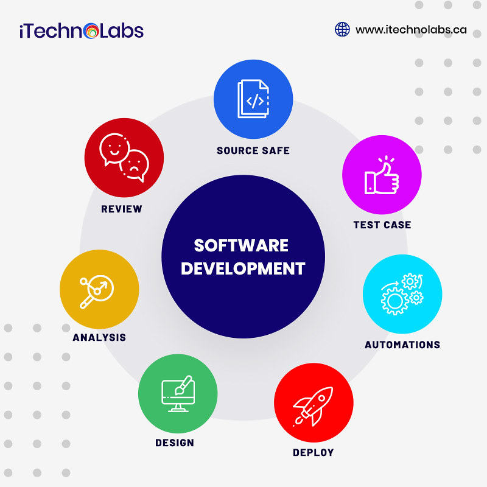
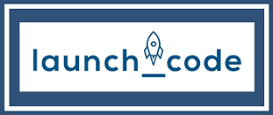
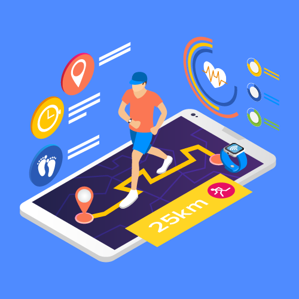

Humble Beginings
Growing up as a Nigerian in New York City, much was required. Nigerian parents expects each child to pursue being a Doctor, Lawyer, or an Engineer. I started of pursuing medicine, but changed majors as a Junior in college. Organic Chemistry was a deal breaker for me to switch to public health. I have always been fascinated with web applications but never had the opportunity to learn how it works. I only knew how to make fitness workout plans using Microsoft office applications. Little did I know that years later, I would have that opportunity. Living in New York City can be rough. It is a place that keeps you in your toes and hustle for what you want. If you can make it there, you can make it anywhere.
Educational Background
I spent my college and graduate years at Liberty University (Lynchburg, Virginia). My bachelors degree was in Health promotion clinical. I got my masters of public health: Global health concentration. Exposure to tech began during the COVID-19 Pandemic. I noticed the transition to remote work. I notcied that most tech people still had their jobs due to its remote work capabilities. It seemed important at that time to learn the dynamic and requirements to break into that space. I started learning more about Software Development Life Cycle and agile methodologies. However my exposure to software development was limited. Business analys course focused on gathering requirements and relaying it to the dev team to meet stakeholders request. I used that opportunity to understand the foundation of programming languages. Bootcamps were too expensive so I began to learn the little I can the various type of programing languages.
LaunchCode Breakthrough
With self teaching, I was able to understand the fundamental concepts of programming languages such as python and SPSS. I lacked a structural pathway in learning the languages. Once I started learning JavaScript, my confusion and frustration reached new heights. I refused to do any bootcamp due to the financial challenges faced during the pandemic. I found LaunchCode via social media, and it has provided structure in learning. I am confident that this will open doors to a tech opportunity this year.
Hobbies,Trips and Personal Goals
I currently possess a few hobbies. My favorite hobby is weight training and engaging in a plethora of fitness activities. It serves as a stress reliever and also keeps you in peak condition. Taking trips has been long overdue. Perhaps a trip after completing launchcode and starting a tech job could be a great way to reward myself. My personal goal is to create a user friendly fitness and wellness application that will meet the needs of those with a tough schedule.
